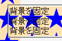
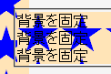

html, body要素以外の要素の背景画像を固定した（background-attachment: fixed;）とき、背景の基準位置が閲覧領域左上端ではなく当該要素の左上端になる。
<style type="text/css">
body {
background-attachment: fixed;
background-image: url(../img/img01.png);
background-repeat: repeat-y;
}
div.scrl {
background-attachment: fixed;
background-image: url(../img/img01.png);
}
</style>
<div class="scrl">背景を固定<br>背景を固定<br>背景を固定</div>
body要素の左端に固定配置した背景画像とdiv要素全体に固定配置した背景画像はつながって表示されるはずです。
※スクロールをしなくても済むように（Operaバグ030対策）ソースを下に移しています。フルスクリーンモードなども活用してください。
Moz1.0.1での表示
Opera6.05での表示
Opera6.05では不具合の発生が確認されました。Opera7.0では標準・互換モードともに不具合の発生は確認されませんでした。